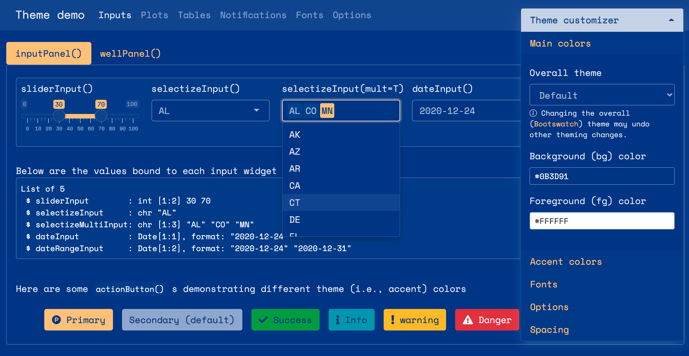
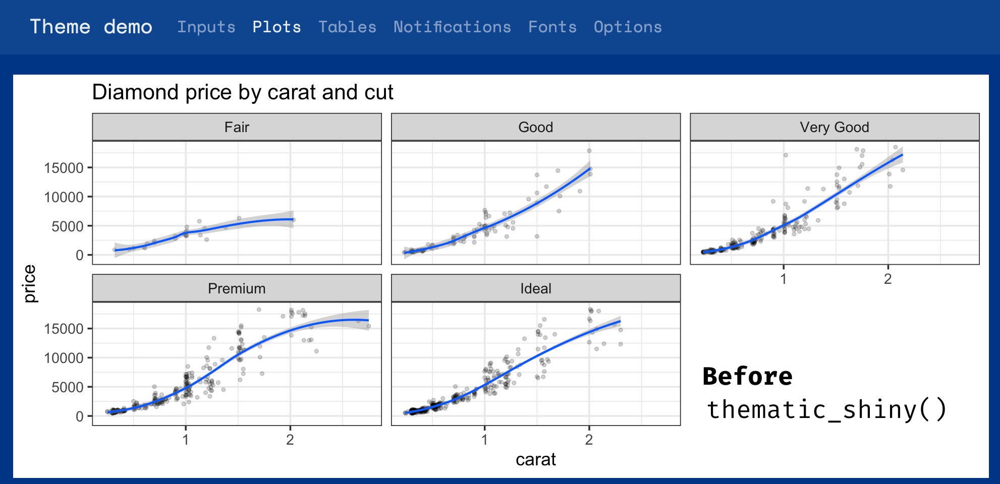
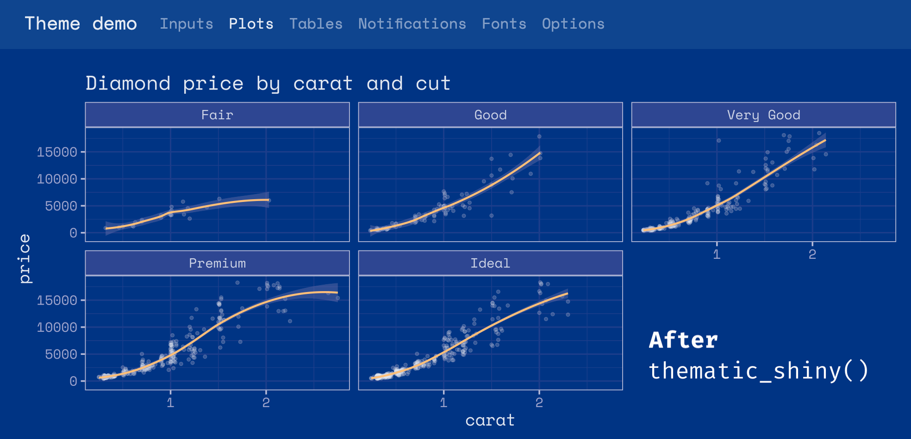
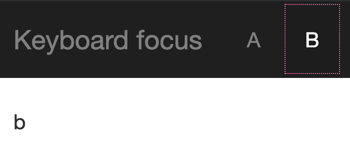
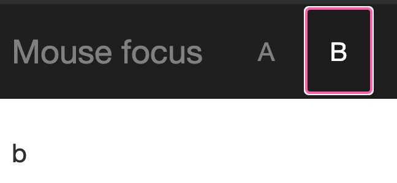

2021-02-01
Please note that the information presented in this post reflects the package as it stood when initially released, and may now be outdated. For the most up-to-date information, kindly refer to https://shiny.posit.co/.
We are thrilled to announce that Shiny 1.6.0 is now on CRAN! Install it now with:
```{r}
install.packages("shiny")
```A lot of hard work went to this release to vastly improve four main areas: theming, caching, accessibility, and developer experience.
This version of Shiny makes it much easier to customize the appearance of your applications. Shiny now integrates with the {bslib} package, which provides Bootstrap 4 and Bootswatch themes, and also makes it much easier to modify colors, fonts, and more. It also provides an interactive theming widget (bslib::bs_themer()) which can be used inside any Shiny app (as well as any rmarkdown::html_document() with runtime: shiny) to more quickly preview different theme variations. Here’s a screen recording of that interactive theming tool in action (also see here for a hosted version):
```{r}
bslib::bs_theme_preview()
```To use {bslib} in your own Shiny app, provide a bslib::bs_theme() to the theme argument of fluidPage(), navbarPage(), and bootstrapPage() (for usage with R Markdown, see here). Inside bs_theme(), you can specify a version of Bootstrap (4 and 3 currently supported), as well as any Bootswatch theme, including new ones like minty!
```{r}
ui <- fluidPage(
theme = bslib::bs_theme(version = 4, bootswatch = "minty"),
...
)
```For years, Shiny has supported Bootswatch 3 themes via the {shinythemes} package, but any further customization of the theme required writing complex CSS rules by hand. Now, thanks to {bslib}, it’s way easier to control main colors & fonts and/or any of the 100s of more specific theming options, directly from R. When it comes to custom font(s) that may not be available on the end users machine, make sure to leverage {bslib}’s helper functions like font_google(), font_link(), and font_face(), which assist in including font file(s) in an convenient, efficient, and responsible way.
```{r}
library(bslib)
theme <- bs_theme(
bg = "#0b3d91", fg = "white", primary = "#FCC780",
base_font = font_google("Space Mono"),
code_font = font_google("Space Mono")
)
bs_theme_preview(theme)
```
One main reason why {bslib} makes it so much easier to implement custom themes is that bs_theme() leverages Bootstrap Sass variables, allowing you to change only a few color(s) and font(s) to impact potentially hundreds of Bootstrap’s CSS rules. Also, thanks to Bootstrap 4’s Utility Classes, you can now more easily tackle complicated UI issues that Sass variables alone won’t solve like adjustments to spacing, alignment, borders, background colors, and more.
To accommodate this new level of customization, a significant portion of shiny UI has also been revamped so that default styles now properly inherit from the theme setting (i.e., notice how sliderInput(), selectInput(), and dateInput() properly reflect the main colors and fonts). We hope that Shiny and {htmlwidgets} developers also find {bslib}’s tools for theming custom components useful for implementing components that also “just work” with custom themes.
While a lot of custom theming can be done via bs_theme() (i.e., CSS), it fundamentally can’t effect things like renderPlot(), because the image is rendered by R, not by the web browser. To help solve this problem, we’ve also created the {thematic} package which can effectively translate CSS to new R plotting defaults by just calling thematic::thematic_shiny() before running an app.
 
This ‘auto theming’ behavior that {thematic} provides works great in Shiny with any CSS framework (not just {bslib}). Also, more generally, {thematic} can help simplify plot theming inside any R environment, using any graphics device, and also makes it super easy to use Google Fonts inside your R plots.
To learn more about what {bslib} and {thematic} are able to do, see https://rstudio.github.io/bslib/ and https://rstudio.github.io/thematic/.
By the way, Shiny 1.6 also adds to methods to the session object, namely setCurrentTheme() and getCurrentTheme(), to dynamically update (or obtain) the page’s theme after initial load. These methods power {bslib}'s interactive theming tool (bslib::bs_themer()), but can also be used to implement dynamic theming widgets like a dark mode switch.
In many Shiny applications, the performance bottlenecks are pieces of code that perform the exact same computation over and over again. For example, you might have a dashboard that displays the same information for many users, and so for those users, it does the exact same data processing and plotting steps.
Instead of repeating these computations, you can now have your app cache the steps, with the new bindCache() function. Here’s how to use it: simply pass your reactive() or renderPlot() (or other render function) to bindCache(), and tell it what to use for the cache key.
Suppose this is our reactive expression which does a slow operation; in this case, it’s calling fetchData(), which retrieves data from a web API:
```{r}
weatherData <- reactive({
fetchData(input$city)
})
```To cache the values, we’ll pass it to bindCache():
```{r}
weatherData <- reactive({
fetchData(input$city)
}) %>%
bindCache(input$city)
```The call to bindCache(input$city) tells it to use input$city as the cache key (you can use more than one item for the cache key, if needed). The first time it sees a value for input$city (for example, "Boston"), it will execute the reactive expression and save the value in the cache. In the future, if it sees the same value of input$city again, instead of executing the reactive expression, it will simply retrieve the value from the cache.
In addition to reactive(), bindCache() works with most render functions. For example:
```{r}
output$plot <- renderPlot({ ... }) %>% bindCache(input$city)
output$text <- renderText({ ... }) %>% bindCache(input$city)
output$plot1 <- plotly::renderPlotly({ ... }) %>% bindCache(input$city)
```To learn more about using caching in Shiny, see this article.
In addition to bindCache(), we’ve added a companion function, bindEvent(), which makes it easy to make reactive code run only when specified reactive values are invalidated. For example, if you have a plot that you want to redraw only when a button is clicked, you could do this:
```{r}
output$plot <- renderPlot({
plot(cars[seq_len(input$nrows), ])
}) %>%
bindEvent(input$button)
```And what’s more, bindCache() and bindEvent() can be used together:
```{r}
output$plot <- renderPlot({
plot(cars[seq_len(input$nrows), ])
}) %>%
bindCache(input$nrows) %>%
bindEvent(input$button)
```This would cache the plot based on the value of input$nrows, and also make it so the plot redraws only when input$button is clicked.
You may be familiar with the existing eventReactive() and observeEvent() functions. bindEvent() can be used with reactive() and observe() to do the same thing (and in fact, the older functions are now implemented using bindEvent()):
```{r}
# These are equivalent:
eventReactive(input$button, { ... })
reactive({ ... }) %>% bindEvent(input$button)
# These are equivalent:
observeEvent(input$button, { ... })
observe({ ... }) %>% bindEvent(input$button)
```Shiny 1.6 also includes many accessibility improvements to Shiny UI. Most improvements automatically make most existing Shiny apps more accessible, but some features such as alternative text for plots require some effort to fully implement. And while this release is a big step forward for Shiny’s overall accessibility, we’re still in the process of learning more about this area, so expect more improvements in future releases!
Nearly all of Shiny’s (previously in-accessible) UI (e.g., selectizeInput(), dateInput(), icon(), etc.) now automatically includes suitable ARIA attributes, which helps make content more discoverable via keyboard and also assists screen readers to make proper announcements when focus has shifted.
More specifically, a black line is now shown around content that is brought into focus via keyboard. And, thanks to {bslib}, customizing the focus outline’s style is fairly straight-forward:
```{r}
ui <- navbarPage(
theme = bslib::bs_theme("keyboard-outline-style" = "dotted", "keyboard-outline-color" = "hotpink", version = 3),
title = "Keyboard focus", inverse = TRUE,
tabPanel("A", "a"),
tabPanel("B", "b")
)
shinyApp(ui, function(input, output) {})
```
By default, an outline isn’t shown for a mouse-based focus, but one may be added by setting mouse-outline-style to something other than none (it’s default value). This helps makes the app more accessible to visually impaired users that use a mouse.
```{r}
ui <- navbarPage(
theme = bslib::bs_theme("mouse-outline-style" = "auto", "mouse-outline-color" = "hotpink", version = 3),
title = "Mouse focus", inverse = TRUE,
tabPanel("A", "a"),
tabPanel("B", "b")
)
shinyApp(ui, function(input, output) {})
```
A lang argument has been added to all *Page() functions (e.g., fluidPage(), bootstrapPage()) for control over the document-level language used by screen readers and search-engine parsers. By default, it is set to empty string which is commonly recognized as a browser’s default locale, so in most situations, this value won’t need to be changed. BTW, the same argument has been added to the save_html() function from the {htmltools} package, so your static HTML pages may now reap the same benefits.
renderPlot()It’s now easy to include an alternative text description of static plots generated with renderPlot(). Most good descriptions will be a function of reactive values, so keep in mind that you can pass a reactive() expression directly to the new alt argument of renderPlot():
```{r}
ui <- fluidPage(
sidebarPanel(
sliderInput("obs", "Number of observations:", min = 1, max = 1000, value = 500)
),
mainPanel(plotOutput("plot"))
)
server <- function(input, output, session) {
vals <- reactive(rnorm(input$obs))
# A textual description of the histogram of values. Also checkout the BrailleR
# package to easily generate description(s) of common statistical objects
# https://github.com/ajrgodfrey/BrailleR
alt_text <- reactive({
bins <- hist(vals(), plot = FALSE)
bin_info <- glue::glue_data(bins, "{round(100*density, 1)}% falling around {mids}")
paste(
"A histogram of", input$obs, "random values with ",
paste(bin_info, collapse = "; ")
)
})
output$plot <- renderPlot({
hist(vals())
}, alt = alt_text)
}
shinyApp(ui, server)
```Shiny 1.6 also adds a Developer Mode which is enabled by calling devmode() and disabled by calling devmode(FALSE).
With Developer Mode enabled, defaults for numerous options() are altered to enhance the developer experience (but may not be best for published applications), this includes:
shiny.autoreload to TRUE which reloads the app when a sourced R file changes.shiny.minified to FALSE which ensures that JavaScript files are not minified (e.g., shiny.js), making it easier to debug.shiny.fullstacktrace to TRUE which displays the full stack trace when errors occur during execution.sass.cache to FALSE which prevents any possible caching of Sass -> CSS compilation (done via sass::sass()). This is relevant whenever {bslib} is used with Shiny or R Markdown. Note that Sass -> CSS compilation of Bootstrap is costly in production, but caching during development may provide misleading false-positive results.devmode().If you have manually set any of these options, your provided value will take precedence. When a default Developer Mode option is used, a notification will be displayed every eight hours to remind you of the altered behavior.
Developer Mode also includes notifications about best practices within Shiny (such as avoiding shinyServer()).
For more details on Shiny’s 1.6 release, see the NEWS file. There you’ll find more details on accessibility improvements and the many bug fixes that also come with this release. Thanks for reading, and happy developing!